{kind=link}

PicoVGA - displej VGA/TV na Raspberry Pico
verze 1.0, èerven 2021
(c) Miroslav Nìmeèek
Video s ukázkovımi programy: https://www.youtube.com/watch?v=wX1IPa3Q0LU
Obsah
Knihovna PicoVGA umo�òuje vıstup z Raspberry Pico na VGA monitor nebo na PAL/NTSC televizor, se zamìøením na snadné pou�ití v technické a herní praxi. Poskytuje 4 grafické pøekryvné vrstvy s prùhledností, témìø 30 formátù frame bufferù, které lze spolu libovolnì kombinovat, a díky tomu si vystaèí s omezenou velikostí RAM pamìti. K úspoøe RAM pamìti pøispívá i omezení vıstupu na 8 bitù.
Procesor RP2040 obsahuje 264 KB pamìti RAM. Pro vıstup obrazu ve vyšším rozlišení to není mnoho, a proto je potøeba pamìtí RAM velmi šetøit. V technické praxi a pro retro hry (pro dokonalejší hry procesor nemá vıkon) plnì postaèí 8-bitovı grafickı vıstup ve formátu R3G3B2 (tedy èervená 3 bity, zelená 3 bity a modrá 2 bity). Vıstup v 16 nebo 24 bitech v bì�né praxi není smysluplnı, proto�e Raspberry Pico nemá dostatek pamìti ani vıkonu k poskytnutí tak velkého objemu dat v jinıch oblastech ne� krátká dema. S vyu�itím techniky ditheringu lze i pøi 8-bitovém vıstupu dosáhnout zajímavé vısledky zobrazení.
Chcete-li si knihovnu vyzkoušet, staèí v nejjednodušším pøípadì vzít 8 rezistorù, propojit jimi vıstupy GP0 a� GP7 s RGB konektorem VGA nebo SCART TV, HSync (CSync) pøipojit na GP8, sluchátka na GP19 a nahrát demo program pøes USB (programy jsou v balíku knihovny pøipravné ji� pøelo�ené). Je-li potøeba ovládání z klávesnice, spustit konzolovı program napø. begPutty, ale vìtšina programù funguje i bez klávesnice.
Licenèní podmínky: Zdrojové kódy knihovny PicoVGA a zdrojové kódy ukázkovıch programù knihovny PicoVGA jsou k dispozici volnì k dalšímu pou�ití a modifikacím. To se nevztahuje na nìkteré grafické a zvukové prvky (jako jsou napø. zvuky ve høe Pac-Man) a na definice scén hry Sokoban, nebo� se k nim vztahují autorská práva tøetích stran a mohou uplatòovat jiné podmínky šíøení.
Zde pøíklad vıstupu na televizor v prokládaném (interlaced) módu, s redukcí z VGA konektoru na SCART TV konektor. Redukce VGA/SCART obsahuje jen jednoduché propojení pinù konektorù, pøípadnì ještì 1 rezistor pro blanking signál.
Generování obrazu na Raspberry Pico je zále�itost limitního vyu�ití procesoru a je mu nutné podøídit ostatní èinnosti procesoru. Pøi pou�ití PicoVGA knihovny je nutné pamatovat na nìkolik zásad:
Knihovna bì�í v�dy na druhém jádru procesoru a program na prvním jádru. Renderování obrazu je schopné jádro procesoru zcela vytí�it a zpravidla je pro další vyu�ití nevyu�itelné. Oddìlení funkcí jader má vıhodu i v tom, �e jádra se navzájem neovlivòují a není potøeba vzájemné uzamykání. První jádro jednoduše pou�ívá zápis do frame bufferù a druhé jádro obsahy frame bufferù zobrazuje, ani� je mezi nimi nutná nìjaká komunikace. Tím se celková práce usnadní a urychlí.
Je-li pøece jen druhé jádro málo vytí�ené (napø. pøi zobrazení 8-bitové grafiky, která se jednoduše pøenáší pomocí DMA pøenosu), lze ho vyu�ít té� na práci hlavního programu. Je však nutno poèítat s nìkterımi omezeními - program v druhém jádru by nemìl pou�ívat pøerušení (narušovalo by èinnost renderovací funkce), interpolaèní jednotku by mìl pou�ívat s opatrností (renderovací funkce její stav neuchová) a nesmí zakázat pøerušení.
Dùle�itou zásadou je, �e všechna data, ke kterım má mít PicoVGA knihovna pøístup, musí bıt ulo�ena v pamìti RAM. Externí pamì� flash je pomalá a nelze pou�ít pro renderovací funkce. Pokud by se napø. mìl zobrazit obrázek z pamìti flash, je nutné ho nejdøíve zkopírovat do bufferu v pamìti RAM a potom renderovací funkci pøedat ukazatel na kopii obrázku v RAM. Pokud by se jí pøedal ukazatel na obrázek ve flash, pomalı pøístup k flash by zpùsoboval vıpadky obrazu. Kromì obrázkù to platí napø. i pro fonty a vzory dla�dic.
Pøi rozvrhování obrazu je nutné poèítat s omezenou rychlostí vykreslování. Nìkteré módy se vykreslí velmi rychle (napø. 8-bitová grafika se jen pøenáší z frame bufferu pomocí DMA) a nìkteré módy jsou velmi nároèné na vykreslování - napø. renderování sprajtù v pomalém re�imu. Pøi pou�ití nároèného vykreslování se mù�e stát, �e nìkterá videolinka se nevyrenderuje dostateènì rychle v potøebném èase a obraz se rozpadne (vypadne synchronizace). V takovıch pøípadech je nutné pou�ít jinı mód, nebo zmenšit vykreslovanou plochu (doplnit ji jinımi módy, rychlejšími - napø. po stranách obrazu doplnit ovládací prvky tvoøené dla�dicemi), zmenšit rozlišení obrazovky nebo zvıšit rychlost hodin procesoru. Videolinky jsou renderovány samostatnì a proto jde v�dy jen o obsah na jedné videolince, videolinky se navzájem neovlivòují. Napø. rychlost vykreslování sprajtù otestujete tak, �e umístíte všechny sprajty vedle sebe horizontálnì (nejnároènìjší pøípad) a ovìøíte, zda nevypadne synchronizace obrazu.
Opatrnosti je tøeba dbát i v pøípadì pou�ití DMA pøenosu. DMA se pou�ívá k pøenosu dat do PIO. Pøesto�e se pøi pøenosu vyu�ívá FIFO mezipamì�, mù�e znamenat pou�ití jiného DMA kanálu zpo�dìní renderovacího DMA kanálu a tím i vıpadek obrazu. Pøetí�ení DMA mù�e nastat napø. pøi rychlém pøenosu vìtšího bloku dat v RAM pamìti. Ovšem nejvìtším zatí�ením je DMA pøenos dat z flash pamìti. V tom pøípadì DMA kanál èeká na naètení dat z flash pøes QSPI a blokuje tak renderovací DMA kanál.
Generátoru obrazu je nutné podøídit i frekvenci hodin procesoru. Pøed inicializací videomódu knihovna vypoèítá potøebnou frekvenci systémovıch hodin tak, aby èasování odpovídalo po�adavku a aby byla rychlost procesoru dostateèná pro potøebné rozlišení obrazu. Je dobré zpoèátku si vypoètenou frekvenci hodin vypsat pro kontrolu na konzole. Je mo�né knihovnì zakázat zmìnu systémovıch hodin, nebo jí pøedepsat jen urèitı rozsah, v tom pøípadì mohou bıt nìkteré módy nedosa�itelné (nebo se obraz mù�e rozpadat).
Obrazové buffery musí bıt zarovnané na 4 bajty (32-bitové slovo procesoru) a obrazové segmenty musí bıt horizontálnì zarovnané na 4 pixely - to se tıká horizontální pozice segmentu, jeho šíøky, zarovnání (wrapx) a offsetu (offx). Zarovnání se netıká vertikálního smìru. Toto omezení je nutné z toho dùvodu, �e obrazová informace se pøenáší do PIO øadièe pomocí 32-bitového DMA pøenosu, a ten musí bıt zarovnanı na 32-bitové slovo. Jedno 32-bitové slovo obsahuje 4 pixely (1 pixel má 8 bitù), proto i horizontální data v obraze musí bıt zarovnána na 4 pixely. Nelze tedy dìlat jemné horizontální skrolování obrazu po 1 pixelu (omezení se netıká vertikálního skrolování), ale pouze po 4 pixelech. Vıjimkou jsou pomalé sprajty, které se vykreslují softwarovì do videolinky, a mohou se proto posouvat po 1 pixelu. Stejnì tak se omezení netıká softwarového vykreslování do framebufferu (napø. vykreslení obrázku do videopamìti mù�e probìhnout na jakoukoliv souøadnici).
Knihovna PicoVGA je pøipravena pro zjednodušenı pøeklad ve Windows prostøedí, kdy vy�aduje pouze instalaci ARM-GCC pøekladaèe. Pøeklad pro Linux není pøipraven, tuto oblast pøenechávám nìkomu znalejšímu Linux prostøedí. ;-)
K pøekladu potøebujete ARM-GCC pøekladaè. Ten si mù�ete stáhnout zde:
V souèasnosti by se jednalo o verzi gcc-arm-none-eabi-10-2020-q4-major-win32.exe. Doporuèuji pøekladaè nainstalovat do slo�ky C:\ARM10 a pøi instalaci vypnout volbu pro pøidání cesty do PATH. Jednotlivé verze pøekladaèe nejsou v�dy a� tak úplnì zamìnitelné a je proto praktické mít nainstalováno více verzí (slo�ky C:\ARM9, C:\ARM8 atd.) a cestu do pou�ité verze pøekladaèe pøidat a� uvnitø povelového souboru. Tímto zpùsobem jsou pøipravené i pøekladové soubory v PicoVGA. Budete-li chtít zmìnit cestu do slo�ky pøekladaèe, naleznete ji v pøekladovıch souborech _c1.bat a _boot2\c.bat. Nechcete-li pou�ívat více verzí pøekladaèe, ponechte instalaci do implicitní slo�ky a ponechte zapnutou volbu pro pøidání cesty do PATH, pøeklad bude fungovat správnì také.
Knihovnu PicoVGA rozbalte do nìjaké slo�ky. Kamkoliv, kde budete chtít pracovat. ... A tím je instalace ukonèena. :-)
Další doporuèení pro snadné pou�ití RaspberryPicoSDK knihoven ve Windows naleznete v popisu "Snadnı pøeklad Raspberry Pico pod Windows": http://www.breatharian.eu/hw/rasppico/index.html .
Nepøedkládám zde celkové zapojení které jsem pou�il, proto�e knihovna vznikla jako souèást retro herního poèítaèe s Raspberry Pico a je zatím ve vıvoji. Zde je zjednodušené schéma zapojení vıstupu na VGA monitor (doplnìno o zvukovı PWM vıstup):
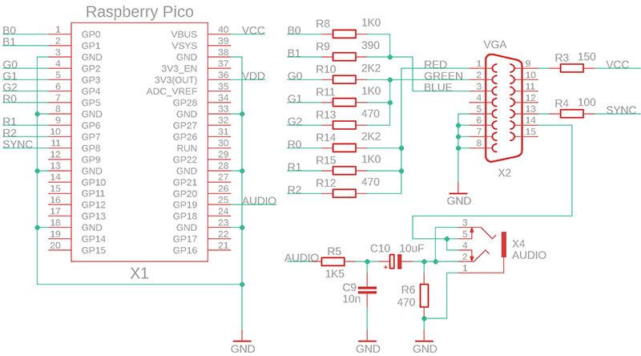
Synchronizaèní vıstup má formát synchronizaèní smìsi CSYNC (composite synchro, HSYNC + VSYNC). Poèítaèové monitory podporují smíšenou synchronizaci CSYNC. Signál se pøivádí na vstup HSYNC (oznaèovanı té� jako CSYNC). Na pin VSYNC konektoru VGA je pøiveden zvukovı vıstup, to pro pøípad vıstupu na televizor. VGA monitor má na tomto pinu vstupní impedanci 75 ohmù, díky tomu se audio signál utlumí a VGA monitor ho ignoruje a nepova�uje za vertikální synchronizaci. Po zasunutí audio konektoru se vıstup na VGA monitor odpojí a zvukovı signál je vyveden ven (napø. na audio sluchátka).
Televizor je pøipojen na VGA vıstup pøes redukci, která jednoduše propojí piny VGA konektoru s pøíslušnımi piny SCART konektoru. V tomto pøípadì se vyu�ije i audio signál pøivedenı na VGA konektor. Není tak nutné, aby zaøízení obsahovalo i speciální konektor pro televizor. Napìtí 5V z pinu 9 se vyu�ije jako ovládací napìtí pro SCART konektor - pin 16 SCART konektoru (Blanking) se pøipojí pøes odpor 100 ohmù a pin 8 (Switch) se pøipojí pøímo.
Není zde zakresleno pøipojení klávesnice. Všechny ukázkové programy jsou pøipravené tak, aby bylo mo�né pou�ít ovládání programu pøes konzoli na USB virtuálním portu. Staèí Pico pøipojit k PC pøes USB kabel, kterım probíhá programování, a spustit konzolovı program (napø. begPutty), kterı se pøipojí k virtuálnímu USB COM portu. Bli�ší popis pøipojení naleznete v popisu SDK.
Pøi zaèlenìní PicoVGA knihovny do projektu je nejjednodušší cestou pou�ít nìkterı ji� existující ukázkovı projekt. Pro maximální jednoduchost jsou do projektù zaèlenìny všechny zdrojové soubory. Pøeklad sice trvá o nìco déle, ale nevy�aduje úpravy vıbìru a poøadí pøekládanıch souborù, èím� se vıslednì práce zjednoduší.
Pøi zaèlenìní knihovny do ji� existujícího projektu je potøeba pøevzít slo�ku _picovga, která obsahuje zdrojové soubory knihovny PicoVGA. V souboru global.h naleznete hlavièkové soubory *.h, které se do projektu zaèleòují (_picovga/define.h atd.). Pøidávané pøekládané soubory naleznete v souboru Makefile.inc. Jednak skupina souborù v assembleru "ASM picovga" a jednak C zdrojové kódy "C picovga".
Knihovna PicoVGA vy�aduje pøi pøekladu soubor vga.pio, pøelo�enı pomocí pøekladaèe pioasm.exe do souboru vga.pio.h. V aktuální slo�ce projektu vyhledává soubor include.h, kterı obsahuje seznam všech hlavièkovıch souborù, vèetnì vga.pio.h.
Dále v aktuální slo�ce vyhledává soubor vga_config.h. Ten obsahuje nastavení knihovny PicoVGA, jako napø. velikost renderovacích bufferù. Souboru vga_config.h si vìtšinou všímat nemusíte. Musíte do nìj zasáhnout obvykle v tìchto pøípadech:
Všechny demo pøíklady v PicoVGA jsou ji� pøipravené pøelo�ené (pøelo�enı soubor má v�dy jméno program.uf2) - pøelo�eno pro VGA monitor a USB konzolovou klávesnici. Staèí je jen nahrát do Pico spuštìním e.bat (="Export"). Budete-li chtít v kódu nìco mìnit, novı pøeklad zajistíte spuštìním c.bat (="Compile"). Ve FAR jen stisknìte c<Enter>. Vyèištìní pøekladu provedete spuštìním d.bat (="Delete"). Sma�ou se všechny pøechodné soubory a ponechá se jen vıslednı pøelo�enı soubor program.uf2.
Bìhem pøekladu je zajištìno, �e pøi úpravách souborù *.c, *.asm a *.cpp se pøekládají jen zmìnìné soubory, ne celı projekt. Není tedy nutnı kompletní pøeklad po ka�dé zmìnì kódu. Není zde ovšem zajištìn pøeklad v závislosti na hlavièkovıch souborech *.h, na to je potøeba pamatovat. Tedy bì�nì pøekládat zrychlenì pomocí c.bat a jen po podstatnìjších zmìnách v *.h nebo pøi podezøelém chování nejdøíve vymazat starı pøeklad pomocí d.bat a provést pak plnı pøeklad.
V základní slo�ce PicoVGA naleznete ještì soubory c_all.bat a d_all.bat - slou�í k hromadnému pøelo�ení nebo proèištìní pøekladu všech demo programù.
V souboru Makefile, nacházejícím se u ka�dého projektu, naleznete nastavení projektu. Zpravidla si vystaèíte s tím, �e budete pøidávat další zdrojové soubory *.c k promìnné CSRC a soubory *.cpp k promìnné SRC. Budete-li do projektu pøidávat hlavièkové soubory *.h, pøidávejte je do souboru src\include.h. Odkaz na include.h uvedete na zaèátku ka�dého souboru *.c a *.cpp.
Pøelo�enı program mù�ete do Pico nahrát buï pøeta�ením myší, nebo povelovım souborem e.bat. Pro ten úèel je u�iteèné disk pojmenovat jednotnì napø. R: (=Raspberry). Pøejmenování se provede ve správì poèítaèe - pøes Tento poèítaè / Spravovat. Nebo upravit jméno disku v souboru _e1.bat.
V PicoVGA naleznete následující slo�ky:
_boot2 - Zavadìèe 2. stupnì.
_exe - program elf2uf2 pro export pøelo�eného programu z formátu elf2 do formátu uf2, a pioasm, pøekladaè programù pro PIO. Programy jsou pøipraveny pro 64-bitovı systém Windows. Pro 32-bitovı systém pou�ijte knihovny ze slo�ky 32bit.
_picovga - knihovna PicoVGA, spolu s podpùrnımi programy
_sdk - knihovní soubory SDK. Struktura je zjednodušená oproti originálnímu SDK. Všechny *.c soubory se nacházejí v jedné slo�ce a všechny *.h soubory ve slo�ce include.
_tinyusb - knihovna TinyUSB pro obsluhu USB portu.
_tools - utility pro obsluhu pøekladu z knihovny MinGW, jako je program "make.exe" atd.
_www - obsah této www stránky s popisem.
Ostatní slo�ky obsahují demo pøíklady.
Videomód lze inicializovat buï zjednodušenì samotnou funkci Video() nebo podrobnìji pomocí následujících funkcí.
Video(u8 dev, u8 res, u8 form, u8* buf, const void* buf2) ... Zjednodušená inicializace videomódu. Popis funkce a parametrù naleznete ve vga_vmode.h. Tato funkce v sobì zahrnuje následující funkce uvedené zde ní�e. Podporuje jen 1 segment displeje a má omezenı repertoár formátù a rozlišení, ale v nìkterıch pøípadech mù�e staèit. Funkci staèí pøedat jen ukazatel na frame buffer, co� je pole u8 o dostateèné velikosti pro obrazová data. Funkce pou�ívá implicitní globální struktury knihovny (Cfg, Vmode, Canvas), jinak je mo�né v programu pou�ívat implicitní globální struktury libovolnì. Pøi pou�ití funkce Video nejsou následující inicializaèní funkce potøebné.
multicore_launch_core1(VgaCore) ... První funkce, která by mìla bıt volána v projektu, spustí druhé jádro procesoru s PicoVGA knihovnou.
void VgaCfg(const sVgaCfg* cfg, sVmode* vmode) ... Pøíprava struktury pro nastavení videomódu. Struktura sVgaCfg (popis ve vga_vmode.h) obsahuje po�adované vlastnosti videomódu - po�adované rozlišení displeje, minimální frekvence procesoru a po�adované èasování signálu sVideo* (té� ve vga_vmode.h), pøípadnì ještì po�adovanı mód pøekryvné vrstvy. Mù�ete nejdøíve zavolat funkci VgaCfgDef, která pøednastaví strukturu na implicitní parametry - rozlišení 640x480, VGA displej, frekvence procesoru 120 a� 270 MHz. Funkce VgaCfg pøipraví strukturu popisovaèe sVmode, která se pozdìji pøedá nicializaèní funkci. V této chvíli ještì k �ádnım operacím nedochází, pouze se poèítá potøebné nastavení. Po vıpoètu je mo�né nìkteré polo�ky struktury sVmode ještì dokorigovat. V knihovnì jsou pøipraveny globální struktury Cfg a Vmode, které lze pro funkci pou�ít. Po�adované rozlišení obrazu a èasování signálu jsou dvì na sobì nezávislé vlastnosti. U èasování jste omezeni jen poètem videolinek obrazu, ale jinak v jejich rámci mù�ete nastavit jakékoliv rozlišení obrazu. Napø. u PAL a NTSC obrazu mù�ete nastavit VGA rozlišení obrazu. Chcete-li zajistit univerzálnost programu, aby ho bylo mo�né spouštìt jak na VGA monitoru, tak na televizoru, pou�ijte VGA rozlišení 640x480 nebo 320x240 (pøíp. 512x400 a 256x192, kvùli omezení RAM). Pøi zmìnì displeje staèí jen zvolit èasování VGA/PAL nebo NTSC, pro program se rozlišení nemìní.
set_sys_clock_pll(Vmode.vco*1000, Vmode.pd1, Vmode.pd2) ... Nastavení systémovıch hodin. Funkce VgaCfg vypoèetla potøebnou frekvenci procesoru, vypoètené hodnoty se pøedají funkci pro nastavení systémovıch hodin. Funkci VgaCfg lze zadat po�adovanı limit frekvence.
ScreenClear(pScreen) ... Vymazání displeje a inicializace struktury displeje. Minimálnì tato funkce by mìla bıt volána pøed inicializací videmódu. Inicializuje strukturu popisovaèe obsahu displej na kterou ukazuje pScreen (obvykle to je implicitní struktura knihovny Screen) tím �e nastaví poèet segmentù na 0. Obrazovka bude èerná, dokud ji nenaplníme popisovaèi obsahu (viz ní�e).
VgaInitReq(&Vmode) ... Inicializace videomódu. Funkce pøedá knihovnì ukazatel na popisovaè formátu, kterı vygenerovala funkce VgaCfg. Ve skuteènosti tato funkce inicializaci videomódu neprovede, pouze knihovnì v druhém jádru procesoru pøedá ukazatel a pak èeká na potvrzení ukonèení inicializace. Je-li potøeba videomód zmìnit (tıká se to zmìny èasování videosignálu a zmìny typu pøekryvnıch vrstev), je nutné nejdøíve zastavit generování obrazu voláním funkce VgaInitReq s parametrem NULL, a teprve a� potom zavolat funkci s novım nastavením videomódu.
Není-li druhé jádro pøíliš vytí�ené generováním obrazu, lze mu pøedat po�adavek k provedení funkce. Generování obrazu to neovlivní, pouze se mù�e stát, �e pøi velké zátì�i generátoru pojede po�adovaná funkce pomalu. Funkce nesmí pou�ívat pøerušení, nesmí zakázat pøerušení a mù�e bıt omezeno pou�ití hardwarového interpolátoru (pøerušení displeje jeho stav neuchová).
Core1Exec(void (*fnc)()) ... provedení funkce jádrem 1.
Bool Core1Busy() ... test, zda je jádro 1 zaneprázdnìné provádìním funkce.
Core1Wait() ... èekání na ukonèení funkce v jádru 1.
Pøi zobrazení obrazu je pro knihovnu vıchozí ukazatel pScreen. Ukazuje na strukturu sScreen, která popisuje obsah displeje. Raspberry Pico má omezenou velikost pamìti RAM a nemù�e pojmout obraz ve velkém rozlišení. Proto je nutné obraz skládat z menších segmentù tak, aby se minimalizovaly èásti nároèné na pamì�.
Poznámka: Následující popisy formátu obrazu se tıkají pouze základní obrazové vrstvy 0. Ta jediná mù�e obsahovat segmenty v rùzném formátu. Pøekryvné vrstvy 1 a� 3 jsou na formátu základní vrstvy nezávislé, sdílejí s ní jen celkovou plochu displeje, ale pou�ívají svùj vlastní formát obrazu.
ScreenClear(sScreen* s) ... Vynuluje struktury popisovaèe displeje, èím� provede vymazání displeje. Tuto funkci je vhodné zavolat v�dy na zaèátku vytváøení nové definice obsahu obrazovky (inicializace segmentù).
sStrip* ScreenAddStrip(sScreen* s, int height) ... Funkce pøidá na konec definice obrazovky novı horizontální pruh o zadané vıšce poètu videolinek. Maximální poèet pruhù je urèen konstantou STRIPMAX (implicitnì 8) v souboru vga_config.h. Bez pøidanıch segmentù je pruh prázdnı (èernı).
sSegm* ScreenAddSegm(sStrip* strip, int width) ... Funkce pøidá na konec pruhu novı obrazovı segment o zadané šíøce. Segment bude obsahovat jeden formát obrazu. U naprosté vìtšiny formátù musí bıt šíøka násobkem 4 (násobek 4 pixelù).
Následují funkce pro nastavení konkrétního formátu obrazového segmentu. Definici segmentu sSegm naleznete ve vga_screen.h. Jsou zde i nìkteré parametry, které nejsou funkcemi øízeny: offx urèuje horizontální posun obrazu (horizontální skrolování). U naprosté vìtšiny formátù musí bıt horizontální skrolování v násobcích 4. Parametr offy urèuje vertikální skrolování. To lze provádìt jemnì po linkách. Porametr wrapx urèuje zarovnání, po kterém se obsah bufferu opakuje. Je tak mo�né napø. zobrazit obrázek dla�dicovì nebo naopak vytvoøit virtuální obrazovku vìtší ne� displej. Tento parametr musí bıt opìt násobkem 4. Podobnì parametr wrapy urèuje vertikální opakování obrazu. Parametr dbly zdvojí vertikální linky. To lze pou�ít u obrazu s malım horizontálním rozlišením.
Parametr 'wb' funkcí udává délku linky v bajtech. Parametr 'data' je ukazatel na frame buffer s grafickımi daty. Parametr 'font', u funkcí pro text, je ukazatel na font. Font je 1-bitovı mono obrázek s 256 znaky na øádek. Ka�dı znak je širokı 8 pixelù, délka linky tedy je 2048 pixelù (256 bajtù). Vertikálnì mù�e mít font libovolnı rozmìr - vıšku fontu udává parametr 'fontheight'. Seznam fontù, které jsou k dispozici, naleznete ve slo�ce _picovga\font.
ScreenSegmColor(sSegm* segm, u32 col1, u32 col2) ... Segment bude vyplnìn barvou (GF_COLOR). Parametry col1 a col2 pøedstavují barvy 4 pixelù pro sudou a lichou linku. Segment tak mù�e namísto spojité barvy obsahovat barevnı rastr. K slouèení barev 4 pixelù lze pou�ít makro MULTICOL.
ScreenSegmGrad1(sSegm* segm, const void* data, int wb) ... Segment bude vyplnìn barevnım gradientem (GF_GRAD1). Gradientem je 1 linka 8-bitovıch pixelù. Gradientem lze horizontálnì posouvat parametrem offx.
ScreenSegmGrad2(sSegm* segm, const void* data, int wb) ... Gradient se 2 linkami, sudá a lichá (GF_GRAD2).
ScreenSegmGraph8(sSegm* segm, const void* data, int wb) ... 8-bitová grafika 256 barev (GF_GRAPH8). Ka�dı pixel je 1 bajt. Tento mód patøí k nejrychlejším, data se z frame bufferu jednoduše posílají do PIO øadièe pomocí DMA pøenosu. Ovšem také k nejnároènìjším na pamì�. Reálnì se do pamìti vejde obraz o rozlišení maximálnì 512x400 pixelù (EGA videomód).
ScreenSegmGraph4(sSegm* segm, const void* data, const void* trans, int wb) ... 4-bitová paletová grafika 16 barev (GF_GRAPH4). V 1 bajtu jsou 2 pixely (první pixel je ve vyšších 4 bitech bajtu). Funkce vy�aduje pøekladovou tabulku palet, která se vygeneruje následující funkcí:
GenPal16Trans(u16* trans, const u8* pal) ... Vygenerování pøekladové tabulky palet pro funkci ScreenSegmGraph4. Pøekladová tabulka je 256 polo�ek o rozmìru 16 bitù, v pamìti tedy zabere 512 bajtù. Tabulka je pou�ita bìhem zobrazení k interním úèelùm, musí bıt zarovnána na 4 bajty a musí bıt k dispozici po celou dobu zobrazování segmentu. Vstupem funkce je tabulka palet, co� je 16 polo�ek barev o rozmìru 1 bajt.
ScreenSegmGraph2(sSegm* segm, const void* data, const void* trans, int wb) ... 2-bitová paletová grafika 4 barvy (GF_GRAPH2). V 1 bajtu jsou 4 pixely (první pixel v nejvyšších 2 bitech). Funkce vy�aduje pøekladovou tabulku palet, která se vygeneruje následující funkcí:
GenPal4Trans(u32* trans, const u8* pal) ... Vygenerování pøekladové tabulky palet pro funkci ScreenSegmGraph2. Pøekladová tabulka je 256 polo�ek o rozmìru 32 bitù, v pamìti tedy zabere 1024 bajtù. Tabulka je pou�ita bìhem zobrazení k interním úèelùm, musí bıt zarovnána na 4 bajty a musí bıt k dispozici po celou dobu zobrazování segmentu. Vstupem funkce je tabulka palet, co� jsou 4 polo�ky barev o rozmìru 1 bajt.
ScreenSegmGraph1(sSegm* segm, const void* data, u8 bg, u8 fg, int wb) ... 1-bitová mono grafika 2 barvy (GF_GRAPH1). V 1 bajtu je 8 pixelù (první pixel v nejvyšším bitu). Funkce vy�aduje barvu pozadí bg a popøedí fg.
ScreenSegmMText(sSegm* segm, const void* data, const void* font, u16 fontheight, u8 bg, u8 fg, int wb) ... Mono text (GF_MTEXT). U mono textu je barva popøedí a pozadí platná pro celı segment. V obrazové pamìti jsou jednotlivé znaky, 1 bajt je jeden znak.
ScreenSegmAText(sSegm* segm, const void* data, const void* font, u16 fontheight, const void* pal, int wb) ... Atributovı text (GF_ATEXT). U atributového textu pøedstavuje ka�dı znak dvojice bajtù. První bajt je ASCII hodnota znaku, druhı bajt je barevnı atribut. Vyšší 4 bity atributu pøedstavují barvu pozadí, ni�ší 4 bity atributu je barva popøedí. Barvy se pøekládají z tabulky palet o 16 barvách.
ScreenSegmFText(sSegm* segm, const void* data, const void* font, u16 fontheight, u8 bg, int wb) ... Text s barvou popøedí (GF_FTEXT). U textu s popøedím pøedstavuje ka�dı znak dvojice bajtù. První bajt je ASCII hodnota znaku, druhı bajt je barva popøedí. Barva pozadí je spoleèná, udává ji parametr 'bg'. Za zmínku stojí, �e implicitní fonty knihovny obsahují ve vyšší polovinì fontù (bit 7 nastaven) invertovanou ni�ší polovinu fontu - tím lze zajistit znak s volitelnou barvou pozadí.
ScreenSegmCText(sSegm* segm, const void* data, const void* font, u16 fontheight, int wb) ... Text s barvou (GF_CTEXT). U textu s barvou zabírá ka�dı znak 3 bajty. První bajt je ASCII hodnota znaku, druhı bajt je barva pozadí a tøetí bajt je barva popøedí.
ScreenSegmGText(sSegm* segm, const void* data, const void* font, u8 fontheight, u8 bg, const void* grad, int wb) ... Text s gradientem (GF_GTEXT). V tomto módu je ka�dı znak zastoupen 1 bajtem v pamìti a barva pozadí je urèena paramtrem 'bg', podobnì jako u mono textu. Namísto barvy popøedí je zde parametr 'grad', co� je ukazatel na gradient barev o délce rovnající se grafické délce øádku textu (napø. pro 40 znakù má gradient 320 bajtù). Z tabulky gradientu je pøevzata barva popøedí pro ka�dı pixel znaku.
ScreenSegmDText(sSegm* segm, const void* data, const void* font, u8 fontheight, u8 bg, const void* grad, int wb) ... Text s dvojitım gradientem (GF_DTEXT). Funkce je toto�ná s pøedcházející funkcí s tím rozdílem, �e ka�dı pixel znaku se generuje jako 2 pixely obrazu. Tedy znak má dvojnásobnou šíøku. Je to jedinı textovı mód umo�òující zobrazení znakù s dvojnásobnou šíøkou. Gradient barev zde funguje obdobnì, avšaj 1 bajt gradientu pøedstavuje 1 pixel znaku (jako u pøedešlé funkce), ne 1 zobrazenı pixel. Tedy øádek 40 znakù vy�aduje opìt gradient 320 bajtù.
ScreenSegmTile(sSegm* segm, const void* data, const void* tiles, int w, int h, int wb) ... Dla�dice ve sloupci (GF_TILE). Dla�dice jsou obrazové segmenty o zadaném rozmìru (šíøka a vıška dla�dice je 'w' a 'h'). Vzory dla�dic jsou uspoøádané do jednoho obrazu. V tomto pøípadì do sloupce o šíøce 1 dla�dice. Parametr 'tiles' je ukazatel na obraz sloupce dla�dic. Parametr 'data' je ukazatel na pole bajtù, kde ka�dı bajt pøedstavuje zobrazené èíslo dla�dice. Dla�dic tedy mù�e bıt maximálnì 256. Parametr 'wb' se vztahuje k délce øádku pole indexù (ne k délce obrazu s dla�dicemi). Šíøka dla�dice musí bıt násobek 4, nejménì 8. Dla�dice umo�òují efektivní zobrazení obrazové informace, tím �e se obraz mù�e opakovat. Lze tak dosáhnout velkého rozlišení obrazu s malımi nároky na pamì�.
ScreenSegmTile2(sSegm* segm, const void* data, const void* tiles, int w, int h, int tilewb, int wb) ... Dla�dice v øádku (GF_TILE2). Funkce je alternativou k pøedešlé funkci s tím rozdílem, �e vzory dla�dic jsou v obraze uspoøádány do jednoho øádku. To mù�e bıt pohodlnìjší pøi vytváøení obrazu dla�dic, ovšem je nutné navíc zadat parametr 'tilewb' pøedstavující délku linky obrazu dla�dic. Obvykle tilewb = poèet dla�dic * šíøka dla�dice.
ScreenSegmLevel(sSegm* segm, const void* data, u8 bg, u8 fg, u8 zero) ... Segment zobrazení úrovnì (GF_LEVEL). Segment slou�í k zobrazení grafù. Vstupem je pole bajtù 'data' o délce odpovídající šíøce pole v pixelech. Hodnota bajtu pøedstavuje vıšku grafu na dané souøadnici X. Displej zobrazí barvu popøedí nebo pozadí podle toho, zda zobrazenı pixel le�í nad hodnotou z pole dat nebo pod. Parametr 'zero' udává vıšku referenèní nuly. Nula neznamená negativní èísla v datech, èísla jsou stále udaná jako bezznaménková (s nulou na spodním okraji). Od referenèní nuly se zamìní barva pozadí a popøedí. To má za následek, �e graf vypadá vizuálnì symetrickı kolem referenèní nuly. Vzhled segmentu mù�ete vidìt v ukázkovém programu Oscilloscope (dolní køivka).
ScreenSegmLevelGrad(sSegm* segm, const void* data, const void* sample1, const void* sample2) ... Segment zobrazení úrovnì s gradientem (GF_LEVELGRAD). Segment slou�í k zobazení grafù, podobnì jako pøedešlá funkce. Liší se tím, �e barva se udává jako vertikální gradient o vıšce odpovídající vıšce segmentu. Le�í-li pixel pod hodnotou dat, pou�ije se barva z prvního gradientu. Jinak se pou�ije druhı gradient. Pøíklad vyu�ití lze vidìt v ukázkovém programu Level Meter, k zobrazení spektra.
ScreenSegmOscil(sSegm* segm, const void* data, u8 bg, u8 fg, int pixh) ... Segment zobrazení køivky osciloskopu (GF_OSCIL). Segment se funkcí podobá segmentu pro zobrazení úrovnì. Liší se tím, �e køivka se zobrazí jako èára o tlouštce 'pixh' pixelù. Tato funkce u� je nároènìjší a nemusí bıt schopna stihnout obslou�it celou šíøku obrazu.
ScreenSegmOscLine(sSegm* segm, const void* data, u8 bg, u8 fg) ... Segment spojité køivky osciloskopu (GF_OSCLINE). Køivka se zobrazí jako spojitá èára o tlouš�ce 1 pixel. Tento mód je ji� velmi nároènı na vykreslení a je proto urychlen sní�ením horizontálního rozlišení na polovinu (vykresluje body široké 2 pixely).
ScreenSegmPlane2(sSegm* segm, const void* data, int plane, const void* trans, int wb) ... 2-bitová paletová grafika 4 barvy ve 2 rovinách (GF_PLANE2). Mód se funkcí podobá grafickému módu 2-bitovıch barev, avšak jednotlivé bity pixelù jsou ulo�eny do 2 samostatnıch barevnıch rovin. Tento re�im se podobá CGA grafickému módu poèítaèù PC. Jednotlivé roviny odpovídají dvìma samostatnım monochromatickım grafickım módùm. Ka�dı bajt roviny obsahuje 8 pixelù (první pixel v nejvyšším bitu). Parametr 'plane' je relativní offset druhé roviny od první roviny, udané parametrem 'data'. Funkce vy�aduje pøekladovou tabulku palet, která se vygeneruje následující funkcí:
GenPal4Plane(u32* trans, const u8* pal) ... Vygenerování pøekladové tabulky palet pro funkci ScreenSegmPlane2. Pøekladová tabulka je 256 polo�ek o rozmìru 32 bitù, v pamìti tedy zabere 1024 bajtù. Tabulka je pou�ita bìhem zobrazení k interním úèelùm, musí bıt zarovnána na 4 bajty a musí bıt k dispozici po celou dobu zobrazování segmentu. Vstupem funkce je tabulka palet, co� jsou 4 polo�ky barev o rozmìru 1 bajt.
V utilitách knihovny PicoVGA není sice k dispozici program, kterı pøipraví obrázek v módu 2 rovin, ale k dispozici je interní funkce Plane2Conv, která zkonvertuje obrázek v 4 barvách na mód se 2 rovinami. Tedy obrázek se k programu pøipojí jako 4-barevnı, a k pøípravì kopie v RAM se pou�ije konverzní funkce.
ScreenSegmAttrib8(sSegm* segm, const void* data, const void* attr, const u8* pal, int wb) ... Grafickı mód s atributy (GF_ATTRIB8). Tento mód je známı z poèítaèù ZX Spectrum. Parametr 'data' je ukazatel na data pixelù. Odpovídá to monochromatickému módu zobrazení, kdy ka�dı bit rozliší, zda se pou�ije barva popøedí nebo pozadí. Parametr 'attr' je ukazatel na pole atributù barev. Atribut barvy je bajt, kde ni�ší 4 bity pøedstavují barvu popøedí a horní 4 bity barvu pozadí. Atribut se zkonvertuje na barevnı pixel pomocí tabulky palet 'pal', co� je pole 16 bajtù barev. Ka�dı atribut urèuje barvy popøedí a pozadí pro skupinku 8 x 8 pixelù. Na ka�dıch 8 bajtù pixelù tedy pøipadá 1 bajt atributù barev. Parametr 'wb' zde udává šíøku linky v bajtech jak pro pole pixelù, tak pro pole atributù. Rozdíl je v tom, �e adresa v poli atributù se neinkrementuje po ka�dé lince, ale po 8 linkách.
V utilitách knihovny PicoVGA není sice k dispozici program, kterı pøipraví obrázek v módu atributù, ale k dispozici je interní funkce Attr8Conv, která zkonvertuje obrázek v 16 barvách na mód s atributy. Tedy obrázek se k programu pøipojí jako 16-barevnı, a k pøípravì kopie v RAM se pou�ije konverzní funkce.
ScreenSegmProgress(sSegm* segm, const void* data, const void* sample1, const void* sample2) ... Progress indikátor (GF_PROGRESS). Progress indikátor je horizontální ukazatel. Parametr 'data' je pole bajtù o délce odpovídající vıšce segmentu. Hodnota bajtu udává délku linky v násobcích 4 pixelù. Tedy hodnota 0 a� 255 pøedstavuje délku indikátoru 0 a� 1020 pixelù. V první èásti indikátoru (< data) se zobrazí barevnı gradient 'sample1', pro druhou èást (>= data) se zobrazí 'sample2'.
ScreenSegmGraph8Mat(sSegm* segm, const void* data, const int* mat, u16 xbits, u16 ybits) ... 8-bitová grafika s 2D maticovou transformací. Tento segment zobrazí 8-bitovı obraz s transformacemi - otoèení, zmìna mìøítka, zešikmení a posun. Obraz musí mít šíøku a vıšku jako mocnina 2. Šíøka a vıška obrazu se zadává pomocí parametrù xbits a ybits jako poèet bitù rozmìru. Napø. pro obraz 512 x 256 pixelù je xbits = 9, ybits = 8. Parametr 'mat' je ukazatel na pole 6 integer parametrù transformaèní matice - viz sekce Transformaèní matice. Segment nepodporuje parametry pro posun a wrapování obrazu, musí se ponechat na implicitních hodnotách.
ScreenSegmGraph8Persp(sSegm* segm, const void* data, const int* mat, u16 xbits, u16 ybits, u16 horiz) ... 8-bitová grafika s 3D perspektivou. Segment je podobnı pøedešlému segmentu, jen navíc na obraz uplatní perspektivní deformaci. Je vhodnı na zobrazení terénu (SNES mód 7). Parametr 'horiz' udává posun horizontu nad hranici segmentu, tedy stupeò zešikmení perspektivy.
ScreenSegmTilePersp(sSegm* segm, const u8* map, const u8* tiles, const int* mat, u8 mapwbits, u8 maphbits, u8 tilebits, s8 horizon) ... Dla�dicová grafika s 3D perspektivou. Slou�í podobnì jako pøedešlá funkce k zobrazení terénu s 3D projekcí. Namísto 8-bitové grafiky pou�ívá definici dla�dic. To umo�òuje zobrazení velmi rozsáhlıch terénù. Parametr 'map' je ukazatel na mapu dla�dic - indexy dla�dic 0 a� 255. Šíøka a vıška mapy musí bıt mocnina 2 a zadávají se jako poèet bitù mapwbits a maphbits. Dla�dice musí mít ètvercovı rozmìr, kterı musí bıt také jako mocnina 2. Rozmìr dla�dic se udává parametrem tilebits jako poèet bitù rozmìru. Parametr 'tiles' je ukazatel na obraz se vzorem dla�dic, uspoøádanıch do 1 sloupce dla�dic. Parametr 'horizon' udává posun horizontu nad hranici segmentu / 4. Kladné èíslo pøedstavuje posun horizontu, pøi záporném èísle se perspektiva otoèí (lze pou�ít k zobrazení oblohy). Nulová hodnota perspektivu vypne - v tom pøípadì se funkce podobá funkci pro zobrazení obrazu s transformaèní maticí (s polem dla�dic lze rotovat, zešikmit atd).
ScreenSegmTilePersp15(sSegm* segm, const u8* map, const u8* tiles, const int* mat, u8 mapwbits, u8 maphbits, u8 tilebits, s8 horizon) ... Podobná funkce, ale pixely se vykreslují o šíøce 1.5 pixelu. Funkci lze vyu�ít pokud pøedešlá funkce nestíhá renderování.
ScreenSegmTilePersp2(sSegm* segm, const u8* map, const u8* tiles, const int* mat, u8 mapwbits, u8 maphbits, u8 tilebits, s8 horizon) ... Podobná funkce, ale pixely se vykreslují o šíøce 2 pixelù. Funkci lze vyu�ít pokud pøedešlá funkce nestíhá renderování.
ScreenSegmTilePersp3(sSegm* segm, const u8* map, const u8* tiles, const int* mat, u8 mapwbits, u8 maphbits, u8 tilebits, s8 horizon) ... Podobná funkce, ale pixely se vykreslují o šíøce 3 pixelù. Funkci lze vyu�ít pokud pøedešlá funkce nestíhá renderování.
ScreenSegmTilePersp4(sSegm* segm, const u8* map, const u8* tiles, const int* mat, u8 mapwbits, u8 maphbits, u8 tilebits, s8 horizon) ... Podobná funkce, ale pixely se vykreslují o šíøce 4 pixelù. Funkci lze vyu�ít pokud pøedešlá funkce nestíhá renderování.
Zobrazení obrazu knihovnou PicoVGA se provádí pomocí øadièe PIO procesoru. Pou�ívá se PIO0. Druhı øadiè, PIO1, je nepou�itı a lze vyu�ít k jinım úèelùm. PIO0 obsahuje 4 state machine, SM0 a� SM3. Všechny state machine PIO0 pou�ívají spoleènı program o velikosti 32 instrukcí. Ka�dı state machine obsluhuje 1 pøekryvnou vrstvu. SM0 obsluhuje základní vrstvu 0, spolu s obsluhou synchronizaèního signálu. Program pro obsluhu základní vrstvy tvoøí 15 instrukcí, poèínaje offsetem 17. Tato èást programu je nemìnná a pou�ívá se v�dy. Ostatní 3 vrstvy, 1 a� 3, SM1 a� SM3, pou�ívají druhou èást programové pamìti, 17 instrukcí od adresy 0. Tato èást se mù�e mìnit, podle módu pøekryvnıch vrstev. Všechny 3 pøekryvné vrstvy pou�ívají spoleènı program a musí proto pracovat ve stejném módu zobrazení. Nìkteré módy pøekryvnıch vrstev pou�ívají stejnı program a mohou bıt sdíleny - blí�e v tabulce ní�e.
Poznámka: Pouze základní vrstva 0 mù�e obsahovat segmenty v rùzném formátu. Pøekryvné vrstvy 1 a� 3 jsou na formátu základní vrstvy nezávislé, sdílejí s ní jen celkovou plochu displeje, ale pou�ívají svùj vlastní formát obrazu, u kterého se udává pouze souøadnice a rozmìr.
Pøekryvné vrstvy mohou pou�ít jeden z následujících programù:
LAYERPROG_BASE ... je oznaèení programu základní vrstvy 0. Nelze pou�ít pro pøekryvné vrstvy. Pou�ití parametru u pøekryvné vrstvy znamená, �e vrstva je neaktivní (nepou�ívá program).
LAYERPROG_KEY ... vrstva s klíèovou barvou. Zadaná barva je nahrazena prùhledností.
LAYERPROG_BLACK ... prùhlednost s èernou barvou. Èerná barva je nahrazena prùhledností. Oproti pøedešlému módu je vıhoda menší nároènosti na rychlost procesoru.
LAYERPROG_WHITE ... prùhlednost s bílou barvou. Je rychlejší podobnì jako pøedešlá funkce a je vhodné pou�ít tam, kde je potøeba zachovat èernou barvu, ale mù�e se o�elet bílá barva. Pøi pøípravì obrazu se obraz nekopíruje z Flash do RAM funkcí memcpy, ale pou�ije se funkce CopyWhiteImg. Funkce zajistí, �e pixely kopírovaného obrázku se inkrementují o 1. Tím se zmìní bílá barva (s hodnotou 255) na èernou barvu (s hodnotou 0). Od této chvíle se s obrázkem pracuje jako by mìl prùhlednost s èernou barvou - napø. se udává èerná barva pro funkci vykreslení sprajtù. Teprve a� se obrázek dostane do programu v PIO0, program pixel zprùhlední stejnì jako v pøípadì èerné barvy, ale souèasnì hodnotu pixelu dekrementuje. Tím se barvy vrátí zpìt k pùvodní hodnotì, èerná barva se stane èernou a bílá barva byla pou�ita jako prùhlednost.
LAYERPROG_MONO ... Tento program v sobì zahrnuje 2 podprogramy. Prvním je zobrazení monochromatického obrazu. Pro ka�dı bit obrazovıch dat se buï zobrazí zvolená barva obrazu nebo pøíslušnı pixel bude prùhlednı. Tento mód je pou�it v pøíkladu Oscilloscope k zobrazení møí�ky pøes obrazovku osciloskopu. Druhım podprogramem je zobrazení barevného obrazu bez prùhlednosti. Pixely barev se zobrazují tak jak jsou, bez mo�nosti prùhlednosti, ale lze definovat rozmìry obdélníku obrazu a jeho souøadnici na displeji. Tedy jakási obdoba jednoho obdélníkového sprajtu bez prùhlednosti.
LAYERPROG_RLE ... Mód RLE komprese. RLE komprese není nìjakı obecnì platnı formát. Znamená, �e data obsahují informace o délce segmentu. V tomto pøípadì knihovny PicoVGA obsahují obrazová data pøímo instrukce pro PIO program. Pøesnìji - data obrazu jsou prokládána adresami skokù uvnitø programu. Obraz je pøipraven pomocí programu RaspPicoRle a je silnì vázanı na pou�itı program vrstvy. Pokud by se napø. posunuly instrukce v programu, formát RLE komprese by pøestal fungovat. To je také dùvod, proè program pro základní vrstvu 0 je umístìn na konci programové pamìti a programy pøekryvnıch vrstvev na zaèátku - aby se sní�ila šance, �e pøi zmìnách v programu se zmìní umístìní programu v pamìti, kdy by RLE komprese pøestala fungovat. Po úpravì RLE programu v PIO je nutné aktualizovat i konverzní program.
V definici videomódu pomocí funkce VgaCfg se zadává po�adovanı mód ka�dé pøekryvné vrstvy. Z módu vrstvy se odvozuje pou�itı program a funkce pro obsluhu vykreslení vrstvy. Více módù vrstvy mù�e sdílet shodnı typ programu. Módy vrstev mají rùzné po�adavky na èasování state machine. Konfiguraèní funkce to zohlední a pøizpùsobí tomu frekvenci procesoru.
Módy pøekryvnıch vrstev:
Módy *WHITE, pou�ívající bílou prùhlednou barvu, vy�adují pøípravu obrazu pomocí funkce CopyWhiteImg, jak je uvedeno u programu LAYERPROG_WHITE.
LAYERMODE_BASE ... Oznaèuje mód základní vrstvy 0. Pro pøekryvnou vrstvu nelze pou�ít, ale pou�ívá se k oznaèení neaktivní vypnuté pøekryvné vrstvy.
LAYERMODE_KEY ... Vrstva se zadanou klíèovou barvou.
LAYERMODE_BLACK ... Vrstva s èernou klíèovou barvou.
LAYERMODE_WHITE ... Vrstva s bílou klíèovou barvou.
LAYERMODE_MONO ... Monochormatickı obraz.
LAYERMODE_COLOR ... Barevnı obraz (bez prùhlednosti).
LAYERMODE_RLE ... Obraz s RLE kompresí.
LAYERMODE_SPRITEKEY ... Sprajty se zadanou klíèovou barvou.
LAYERMODE_SPRITEBLACK ... Sprajty s èernou klíèovou barvou.
LAYERMODE_SPRITEWHITE ... Sprajty s bílou klíèovou barvou.
LAYERMODE_FASTSPRITEKEY ... Rychlé sprajty se zadanou klíèovou barvou.
LAYERMODE_FASTSPRITEBLACK ... Rychlé sprajty s èernou klíèovou barvou.
LAYERMODE_FASTSPRITEWHITE ... Rychlé sprajty s bílou klíèovou barvou.
LAYERMODE_PERSPKEY ... Obraz s transformaèní maticí se zadanou klíèovou barvou.
LAYERMODE_PERSPBLACK ... Obraz s transformaèní maticí s èernou klíèovou barvou.
LAYERMODE_PERSPWHITE ... Obraz s transformaèní maticí s bílou klíèovou barvou.
LAYERMODE_PERSP2KEY ... Obraz s transformaèní maticí se zadanou klíèovou barvou a zdvojenou šíøkou.
LAYERMODE_PERSP2BLACK ... Obraz s transformaèní maticí s èernou klíèovou barvou a zdvojenou šíøkou.
LAYERMODE_PERSP2WHITE ... Obraz s transformaèní maticí s bílou barvou a zdvojenou šíøkou.
Sdílené módy pøekryvnıch vrstev:
Módy vrstev lze spolu kombinovat jen pokud pou�ívají stejnı program. CPP je minimální po�adovanı poèet taktù SMx na pixel.
| PROG_BASE | PROG_KEY | PROG_BLACK | PROG_WHITE | PROG_MONO | PROG_RLE | CPP | |
| LAYERMODE_BASE | x | 2 | |||||
| LAYERMODE_KEY | x | 6 | |||||
| LAYERMODE_BLACK | x | 4 | |||||
| LAYERMODE_WHITE | x | 4 | |||||
| LAYERMODE_MONO | x | 4 | |||||
| LAYERMODE_COLOR | x | 2 | |||||
| LAYERMODE_RLE | x | 3 | |||||
| LAYERMODE_SPRITEKEY | x | 6 | |||||
| LAYERMODE_SPRITEBLACK | x | 4 | |||||
| LAYERMODE_SPRITEWHITE | x | 4 | |||||
| LAYERMODE_FASTSPRITEKEY | x | 6 | |||||
| LAYERMODE_FASTSPRITEBLACK | x | 4 | |||||
| LAYERMODE_FASTSPRITEWHITE | x | 4 | |||||
| LAYERMODE_PERSPKEY | x | 6 | |||||
| LAYERMODE_PERSPBLACK | x | 4 | |||||
| LAYERMODE_PERSPWHITE | x | 4 | |||||
| LAYERMODE_PERSP2KEY | x | 6 | |||||
| LAYERMODE_PERSP2BLACK | x | 4 | |||||
| LAYERMODE_PERSP2WHITE | x | 4 |
Volba zápisovıch rovin
Standardnì probíhá vıstup obrazu z vrstev do všech vıstupních pinù. To lze zmìnit pøedefinováním polí LayerFirstPin a LayerNumPin (ve vga_layer.cpp). Lze urèit pro ka�dou vrstvu zvláš�, do kterıch vıstupních pinù se bude zapisovat. Tím lze vytvoøit jakousi pseudo-prùhlednost. Napø. jedna vrstva bude vykreslovat køivky èervenou barvou, jiná vrstva zelenou barvou, a barvy se budou nezávisle na sobì prolínat. Pøi pøedefinování pinù je však nutné poèítat s tím, �e se posune i offset mapování pinù. Vıstup bude probíhat v�dy od nejni�ších bitù pixelu.
Konfigurace pøekryvnıch vrstev
Prvním krokem pro nastavení pøekryvné vrstvy je zadání módu vrstvy pro inicializaèní funkci VgaCfg. Funkce detekuje potøebnı program a potøebné èasování. Nekontroluje se, zda jsou spolu kombinovány správné módy vrstev.
Jako druhı krok je inicializace popisovaèe vrstvy - struktura sLayer v poli LayerScreen. Je vhodné k tomu pou�ít inicializaèní funkci:
LayerSetup(u8 inx, const u8* img, const sVmode* vmode, u16 w, u16 h, u8 col = 0, const void* par = NULL) ... Parametr 'inx' obsahuje èíslo vrstvy 1..3, 'img' je ukazatel na obrazová data, 'vmode' je ukazatel na pøipravenou strukturu Vmode, 'w' je šíøka obrazu, 'h' je vıška obrazu, 'col' je klíèová barva. V pøípadì módù *BLACK i *WHITE zadejte barvu COL_BLACK (resp. 0). 'par' je doplòkovı parametr. Funkce nastaví rozmìry obrázku a jeho adresu. Souøadnice vynuluje. Pozici obrazu na obrazovce lze nastavit funkcemi LayetSetX a LayerSetY. Souøadnice nezávisí na grafickıch módech základní vrstvy a vztahují se k levému hornímu rohu aktivní plochy obrazovky.
Po inicializaci zùstává vrstva vypnutá. Viditelnost vrstvy je nutné zapnout voláním funkce LayerOn.
V pøípadì módu s transformaèní maticí (LAYERMODE_PERSP*) se namísto uvedené funkce pou�ije tato funkce:
LayerPerspSetup(u8 inx, const u8* img, const sVmode* vmode, u16 w, u16 h, u8 xbits, u8 ybits, s8 horiz, const int* mat, u8 col = 0) ... Na rozdíl od pøedešlé funkce se zadává navíc rozmìr zdrojového obrázku v poètu bitù (rozmìry obrázku musí bıt mocnina 2), vıška horizontu/4 (pro zápornou hodnotu se podlaha zmìní na strop, pro nulu se neuplatòuje perspektivní transformace) a ukazatel na transformaèní matici v celoèíselném tvaru.
V pøípadì módu se sprajty se pou�ije tato funkce:
LayerSpriteSetup(u8 inx, sSprite** sprite, u16 spritenum, const sVmode* vmode, s16 x, s16 y, u16 w, u16 h, u8 col = 0) ... Od pøedešlıch funkcí se liší zadáním souøadnice plochy se sprajty, ukazatele na pole adres sprajtù a poètem sprajtù.
Sprajty lze pou�ívat v pøekryvnıch rovinách s programy KEY, BLACK a WHITE. Jsou dvì mo�nosti pou�ití sprajtù:
Pøi pou�ití sprajtù bude prvním krokem zadání módu vrstvy LAYERMODE_*SPRITE* pro inicializaèní funkci VgaCfg.
Druhım krokem bude sestavení pole zaèátkù a délek linek vzorù obrazù sprajtù pomocí funkce SpritePrepLines. Funkci se pøedá ukazatel na obrázek ka�dého sprajtu (jsou podporovány pouze sprajty s 8-bitovou barvou), rozmìry obrázku, ukazatele na pole zaèátkù a délek linek (rozmìry polí odpovídají vıšce sprajtu) a klíèová barva prùhlednosti. Funkce vyhledá zaèátky a konce linek a zapíše je do polí. Parametr 'fast' udává, zda se tabulky generují pro rychlé sprajty - v tom pøípadì se zaèátky a délky linek vydìlí 4. Pro pomalé sprajty je nutné poèítat s omezením šíøky sprajtu na 255 pixelù.
SpritePrepLines(const u8* img, u8* x0, u8* w0, u16 w, u16 h, u16 wb, u8 col, Bool fast)
Tøetím krokem bude sestavení seznamu sprajtù a inicializace sprajtù - pøedevším ukazatel na obrázek, rozmìry a souøadnice sprajtu. Seznam sprajtù je pole ukazatelù na sprajty. Ka�dı sprajt mù�e bıt v seznamu jen jednou, ale více sprajtù mù�e sdílet stejnı obraz sprajtu a stejné pole zaèátkù a délek linek. Pomalé sprajty mohou mít souøadnice i mimo povolenı rozsah (oøíznou se), ale u rychlıch sprajtù doporuèuji nepøekraèovat horizontální limity obrazovky, oøíznutí obrazu není ještì správnì doladìné a program by se mohl zhroutit.
Sprajty nemají sice parametr pro vypínání pøi neèinnosti, ale jejich vypnutí lze zajistit nastavením souøadnice Y mimo obrazovku. Pøi renderování se vyhledávají viditelné sprajty podle souøadnice Y, neplatná souøadnice Y zajistí bezpeèné znefunkènìní sprajtu.
Rychlé sprajty vy�adují setøídìní seznamu podle souøadnice X. K tomu slou�í funkce SortSprite, které se pøedá ukazatel na seznam sprajtù a poèet sprajtù v seznamu. Tato funkce by se mìla zavolat v�dy, kdy� zmìníte souøadnice X sprajtù. Pøechodné stavy (napø. chvilkové chybné pøekrytí sprajtù) nevadí, jde jen o krátkodobé optické chyby, program to neohrozí. Funkce tøídí bublinkovou metodou, tedy celkem pomalu, ale zatím se nezdálo �e by to nìèemu škodilo (sprajtù nebıvá mnoho).
SortSprite(sSprite** list, int num)
Posledním krokem je inicialitzace vrstvy se sprajty. Funkce byla popsána v pøedešlé kapitole.
LayerSpriteSetup(u8 inx, sSprite** sprite, u16 spritenum, const sVmode* vmode, s16 x, s16 y, u16 w, u16 h, u8 col = 0)
Následuje u� jen zapnutí viditelnosti vrstvy funkcí LayerOn a øízení sprajtù zmìnou jejich souøadnic X a Y a zmìnou jejich obrázkù img.
Canvas je kreslicí plátno. Je to podpùrná knihovna pro práci s grafickou plochou a obrázky (blí�e soubor canvas.h ve slo�ce _picovga\util). Struktura sCanvas je soubor parametrù, které popisují grafickou plochu, pro pou�ití v kreslicích funkcích. Grafickou plochou mù�e bıt jak grafickı frame buffer, tak i obrázek, a to i ve Flash.
Chcete-li kreslit do grafické plochy, pøipojte k ní nejdøíve canvas jako definici popisující strukturu plochy. A stejnì tak, chcete-li vykreslit do plochy obrázek, nejdøíve pro obrázek vytvoøte jeho canvas s parametry. Jako parametry se do struktury zadá ukazatel na data obrázku, rozmìry obrázku a formát. Jako kreslicí plocha mù�e bıt grafická plocha s hloubkou 1, 2, 4, 8 bitù nebo s atributy. V pøípadì kreslení obrázku do plochy musí mít zdrojovı a cílovı canvas stejnı formát. V pøípadì transformaèních matic lze kreslit pouze do 8-bitového grafického formátu.
Poznámka: V PicoVGA je k dispozici implicitní canvas Canvas. Je na nìj automaticky pøipojen grafickı frame buffer pøi inicializaci pomocí funkce Video. Jinak je mo�né ho pou�ívat v programu libovolnì.
DrawRect(sCanvas* canvas, int x, int y, int w, int h, u8 col) ... vykreslení obdélníku.
DrawFrame(sCanvas* canvas, int x, int y, int w, int h, u8 col) ... vykreslení rámu o tlouš�ce 1 pixel.
DrawClear(sCanvas* canvas) ... vyplnìní canvasu èernou barvou.
DrawPoint(sCanvas* canvas, int x, int y, u8 col) ... vykreslení pixelu.
DrawLine(sCanvas* canvas, int x1, int y1, int x2, int y2, u8 col) ... vykreslení èáry.
DrawFillCircle(sCanvas* canvas, int x0, int y0, int r, u8 col, u8 mask=0xff) ... vykreslení vyplnìného kruhu. x0 a y0 jsou souøadnice støedu, r je polomìr. Maska 'mask' udává pomocí bitù 0 a� 7, které osminy kruhu se vykreslí.
DrawCircle(sCanvas* canvas, int x0, int y0, int r, u8 col, u8 mask=0xff) ... vykreslení kru�nice, parametry jako u pøedešlé funkce.
DrawText(sCanvas* canvas, const char* text, int x, int y, u8 col, const void* font, int fontheight=8, int scalex=1, int scaley=1) ... vıpis textu s prùhlednım pozadím. scalex a scaley je mìøítko zvìtšení ve smìrech X a Y.
DrawTextBg(sCanvas* canvas, const char* text, int x, int y, u8 col, u8 bgcol, const void* font, int fontheight=8, int scalex=1, int scaley=1) ... vıpis textu se zadanou barvou pozadí
DrawImg(sCanvas* canvas, sCanvas* src, int xd, int yd, int xs, int ys, int w, int h) ... vykreslení obrázku (bez prùhlednosti).
DrawBlit(sCanvas* canvas, sCanvas* src, int xd, int yd, int xs, int ys, int w, int h, u8 col) ... vykreslení obrázku, prùhlednost zadaná klíèovou barvou.
DrawImgMat(sCanvas* canvas, const sCanvas* src, int x, int y, int w, int h, const class cMat2Df* m, u8 mode, u8 color) ... vykreslení obrázku s transformací pomocí transformaèní matice (otáèení atd.). Bli�ší info v canvas.h.
DrawTileMap(sCanvas* canvas, const sCanvas* src, const u8* map, int mapwbits, int maphbits, int tilebits, int x, int y, int w, int h, const cMat2Df* mat, u8 horizon) ... vykreslení mapy dla�dic s perspektivou.
DrawImgLine(sCanvas* canvas, sCanvas* src, int xd, int yd, int xs, int ys, int wd, int ws) ... vykreslení linky obrazu s interpolací.
Nìkteré vykreslovací funkce pou�ívají k zobrazení transformaèní matici cMat2Df, která definuje transformaci obrazu (blí�e soubor mat2d.h ve slo�ce _picovga\util). Matice má 6 èíselnıch prvkù typu float. Transformace se pøipraví nastavením vıchozího stavu funkcí Unit a poté postupnım zadáváním transformací. Pou�itím matice se provede s obrazem operace, jako by se jednotlivé operace zadávaly postupnì.
GetX ... provedení transformace pro souøadnici X
GetY ... provedení transformace pro souøadnici Y
Unit ... inicializace matice na jednotkovı vıchozí stav
Copy ... kopie matice
TransX ... posun ve smìru X
TransY ... posun ve smìru Y
ScaleX ... zmìna mìøítka ve smìru X
ScaleY ... zmìna mìøítka ve smìru Y
RotSC ... rotace se zadáním vısledkù funkce sin(a) a cos(a)
Rot ... rotace se zadáním úhlu
Rot90 ... rotace o 90°
Rot180 ... rotace o 180°
Rot270 ... rotace o 270°
ShearX ... zkosení ve smìru X
ShearY ... zkosení ve smìru Y
FlipY ... vertikální pøeklopení
FlipX ... horizontální pøeklopení
PrepDrawImg(int ws, int hs, int x0, int y0, int wd, int hd, float shearx, float sheary, float r, float tx, float ty) ... Pøíprava matice pro vykreslovací funkci. Poøadí operací je zvoleno tak, jako by se obraz nejdøíve posunul do bodu tx a ty, provedla se zmìna mìøítka, zešikmení, pak rotace a nakonec posun do cílovıch souøadnic.
ExportInt(int* mat) ... Export matice do celoèíselného pole (6 prvkù int). Po transformaci obsahuje 12 spodních bitù èísla desetinnou èást èísla, horních 20 bitù obsahuje celoèíselnou èást èísla. Vykreslovací funkce vy�adují tento celoèíselnı tvar transformaèní matice.
Nìkteré zobrazující funkce mohou bıt nároèné na rychlost procesoru a mohou vy�adovat pøetaktování na vyšší rychlost. Je nutno poèítat s tím, �e pøetaktováním se procesor dostává do oblastí s nezaruèenou správnou funkcí. Knihovna PicoVGA umo�òuje øídit pøetaktování procesoru, podle po�adovaného videomódu. Ve funkci VgaCfg lze zadat minimální a maximální frekvenci procesoru. Implicitnì knihovna povoluje rozsah 120 a� 270 MHz. Mù�e se však stát, �e pøi vyšších frekvencích bude procesor pracovat chybnì a mù�e bıt nutné horní hranici sní�it.
Vyhledanou frekvenci procesoru lze nastavit funkcí set_sys_clock_pll.
bool vcocalc(u32 reqkhz, u32 input, u32 vcomin, u32 vcomax, bool lowvco, u32* outkhz, u32* outvco, u16* outfbdiv, u8* outpd1, u8* outpd2) ... Funkce pro vyhledání optimálního nastavení PLL generátoru systémovıch hodin. Funkci se zadá po�adovaná vıstupní frekvence, vstupní frekvence krystalu (v Raspberry Pico 12 MHz), minimální a maximální frekvence oscilátoru VCO. Vıstupem jsou parametry pro nastavení PLL oscilátoru. Funkce navrací True, pokud se jí podaøilo nalézt nastavení pro pøesnou hodnotu po�adované frekvence. Jinak vyhledá nastavení pro nejbli�ší frekvenci a vrátí False. Blí�e soubor overclock.h ve slo�ce _picovga\util.
bool FindSysClock(u32 reqkhz, u32* outkhz, u32* outvco, u16* outfbdiv, u8* outpd1, u8* outpd2) ... Vyhledání nastavení PLL generátoru s implicitními parametry.
void __not_in_flash_func(FlashSpeedSetup)(int baud) ... Nastavení rychlosti interface pro externí flash.
Funkce pro tisk textu se pou�ívají k vıstupu textu do textového frame bufferu (blí�e soubor print.h ve slo�ce _picovga\util). V souèasnosti jsou podporované formáty bufferù GF_ATEXT (text s barevnım atributem) a GF_MTEXT (mono text).
PrintSetup(u8* buf, int bufw, int bufh, int bufwb) ... Inicializace obsluhy tisku textu. Funkci se pøedá ukazatel na textovı frame buffer a jeho rozmìry. Je-li délka øádku v bajtech ni�ší ne� dvojnásobek šíøky, zvolí se formát mono textu GF_MTEXT, jinak se pou�ije formát s atributy GF_ATEXT. Tato funkce je automaticky volána pøi inicializaci videomódu pomocí funkce Video.
int PrintX, PrintY ... Aktuální tisková pozice.
u8 PrintCol ... Aktuální tisková barva (neuplatní se u mono textu).
PrintClear() ... Vymazání textového bufferu aktuálnì zvolenou barvou.
PrintHome() ... Pøesun ukazatele na zaèátek prvního øádku.
PrintSetPos(int x, int y) ... Nastavení tiskového ukazatele (sloupec a øádek).
PrintAddPos(int x, int y) ... Relativní posun tiskového ukazatele.
PrintSetCol(u8 col) ... Nastavení tiskové barvy. Pou�ijte makro PC_COLOR k sestavení barevného atributu.
PrintChar0(char ch) ... Vytištìní znaku do tiskového bufferu, bez zohlednìní øídicích znakù.
PrintChar(char ch) ... Vytištìní znaku do tiskového bufferu, s obsluhou øídicích znakù CR, LF a TAB
PrintSpc() ... Vytištìní mezery.
PrintSpcTo(int pos) ... Vytištìní mezer a� po zadanou pozici.
PrintCharRep(char ch, int num) ... Opakovanı tisk znaku.
PrintSpcRep(int num) ... Opakovanı tisk mezery.
PrintText(const char* text) ... Tisk textu.
PrintHLine(int x, int y, int w) ... Vykreslení horizontální linky. Ke kreslení se pou�ívají znaky pro kreslení èar s kódem 17 a� 31, tak jak jsou nadfinovány ve fontech knihovny PicoVGA. Pøi kreslení se èára kombinuje se znaky které jsou ji� v tiskovém bufferu tak, aby se èáry správnì spojovaly a pøekrıvaly. Funkce neošetøuje pøeteèení mimo povolenı rozsah displeje.
PrintVLine(int x, int y, int h) ... Vykreslení vertikální linky. Ke kreslení se pou�ívají znaky pro kreslení èar s kódem 17 a� 31, tak jak jsou nadfinovány ve fontech knihovny PicoVGA. Pøi kreslení se èára kombinuje se znaky které jsou ji� v tiskovém bufferu tak, aby se èáry správnì spojovaly a pøekrıvaly. Funkce neošetøuje pøeteèení mimo povolenı rozsah displeje.
PrintFrame(int x, int y, int w, int h) ... Vykreslení èárového rámu. Funkce pou�ívá pøedešlé 2 kreslicí funkce.
Knihovna PicoVGA obsahuje podporu pro vıstup zvuku pomocí PWM modulace. Implicitnì vıstup zvuku probíhá na port GPIO19 - nadefinováno v souboru pwmsnd.h ve slo�ce _picovga\util. Na port se lze napojit pøímo (napø.sluchátka) nebo lépe pøes jednoduchı RC filtr s dolní propustí.
Vıstup zvuku pomocí PWM modulace má vıhodu v tom, �e postaèí 1 vıstupní pin a vıstupní obvody jsou velmi jednoduché. Nevıhodou je zašumìní zvuku modulaèním kmitoètem a nízká bitová hloubka zvuku (pou�ívá se hloubka 8 bitù). Vyšší hloubka není mo�ná z dùvodu omezené frevence procesoru. Tento vıstup je postaèující pro vìtšinu bì�nıch nenároènıch aplikací (jako jsou retro hry). Pro vyšší kvalitu zvuku se musí pou�ít jinı zpùsob.
Poznámka: Dojde-li ke zmìnì systémovıch hodin, je nutné reinicializovat nastavení zvukového vıstupu novım zavoláním inicializaèní funkce.
PWMSndInit() ... Inicializace knihovny pro vıstup zvuku PWM.
PlaySound(const u8* snd, int len, Bool rep = False, float speed = 1.0f) ... Pøehrátí zvuku. Zvuk musí bıt ve formátu nekomprimovanı PCM, mono, 8 bitù, frekvence 22050 Hz. V parametrech lze zadat, zda se zvuk bude opakovat a jaká bude relativní rychlost jeho pøehrávání (zvuk lze paramtrem 'speed' zrychlit nebo zpomalit).
StopSound() ... Zastaví pøehrávání zvuku. Vıstup na vıstupní pin bude probíhat i nadále (projeví se slabım šumem), ale pou�ije se hodnota nuly 128.
SpeedSound(float speed) ... Nastavení rychlosti pøehrávání. Pou�ívá se pøi opakovaném pøehrávání zvuku ke zmìnì vıšky tónu (napø. zvuk motoru auta). Hodnota 1.0 pøedstavuje standardní rychlost pøehrávání.
Bool PlayingSound() ... Testuje, zda probíhá pøehrávání zvuku.
SetNextSound(const u8* snd, int len) ... Nastavení dalšího zvuku k pøehrátí. Pou�ívá se u opakovanıch zvukù, aby se dokonèilo pøehrátí aktuálnáího zvuku a pokraèovalo se dalším zvukem.
Knihovna cRandom (blí�e viz soubor rand.h ve slo�ce _picovga\util) nahrazuje a rozšiøuje standardní generátor náhodnıch èísel. Jako seed se pou�ívá 64-bitové èíslo, co� zajistí dostateènou náhodnost èísla. Omezenou náhodnost standardního 32-bitového generátoru lze pozorovat napø. pøi generování terénu - projeví se jako vlny v terénu. Lze pou�ít buï globální promìnnou Rand a funkce k ní patøící, nebo si vytvoøit další lokální generátor cRandom. Následující funkce se vztahují ke globálním generátoru Rand. Pøi startu programu se doporuèuje pou�ít funkci RandInitSeed, která zajistí neopakující se náhodnost generátoru.
u64 RandSeed() ... Navrátí aktuální stav seed generátoru náhody. Lze pou�ít k uchování stavu generátoru a jeho pozdìjší obnovì, za úèelem reprodukovatelné sekvence náhody.
RandSetSeed(u64 seed) ... Nastavení seed generátoru náhody. Bez nastavení seed zaèíná generátor náhody s implicitní hodnotou 0, která vznikne nulováním pamìti pøi startu programu.
RandInitSeed() ... Inicializace generátoru náhody náhornım èíslem. Funkce pou�ívá vıstup z ROSC èítaèe. Pøesto�e jeho vıstup nezajistí velkou pestrost náhodnosti, bude tím zajištìno, �e pøi opakovaném startu programu se nebude zaèínat se stejnou posloupností náhodnosti. Tato funkce by mìla bıt volána v�dy na zaèátku po spuštìní programu.
u8 RandU8() ... Generování èísla u8 (0..255)
u16 RandU16() ... Generování èísla u16 (0..65535)
u32 RandU32() ... Generování èísla u32 (0..0xFFFFFFFF)
u64 RandU64() ... Generování èísla u64 (0..0xFFFFFFFFFFFFFFFF)
s8 RandS8() ... Generování èísla s8 (-128..+127)
s16 RandS16() ... Generování èísla s16 (-32 768..+-32 767)
s32 RandS32() ... Generování èísla s32 (-0x80000000..+0x7FFFFFFF)
s64 RandS64() ... Generování èísla s64 (-0x8000000000000000..+0x7FFFFFFFFFFFFFFF)
float RandFloat() ... Generování desetinného èísla float v rozsahu 0 (vèetnì nuly) a� 1 (vyjma 1).
double RandDouble() ... Generování desetinného èísla double v rozsahu 0 (vèetnì nuly) a� 1 (vyjma 1).
Generování èísel od 0 po zadané maximum (vèetnì maxima):
u8 RandU8Max(u8 max)
u16 RandU16Max(u16 max)
u32 RandU32Max(u32 max)
u64 RandU64Max(u64 max)
s8 RandS8Max(s8 max)
s16 RandS16Max(s16 max)
s32 RandS32Max(s32 max)
s64 RandS64Max(s64 max)
float RandFloatMax(float max) ... Generování èísla float od 0 (vèetnì nuly) po zadané maximum (vyjma maxima)
double RandDoubleMax(double max) ... Generování èísla double od 0 (vèetnì nuly) po zadané maximum (vyjma maxima)
Generování èísel v zadaném rozsahu, vèetnì hranièních hodnot (je-li min > max, vygeneruje se èíslo vnì intervalu):
u8 RandU8MinMax(u8 min, u8 max)
u16 RandU16MinMax(u16 min, u16 max)
u32 RandU32MinMax(u32 min, u32 max)
u64 RandU64MinMax(u64 min, u64 max)
s8 RandS8MinMax(s8 min, s8 max)
s16 RandS16MinMax(s16 min, s16 max)
s32 RandS32MinMax(s32 min, s32 max)
s64 RandS64MinMax(s64 min, s64 max)
float RandFloatMinMax(float min, float max) ... Generování èísla float v rozsahu min (vèetnì minima) a� max (vyjma maxima)
double RandDoubleMinMax(double min, double max) ... Generování èísla double v rozsahu min (vèetnì minima) a� max (vyjma maxima)
float RandGaussF(float mean = 0, float sigma = 1) ... Generování Gaussova náhodného èísla float, se støedem 'mean' a šíøkou intervalu 'width'.
double RandGaussD(double mean = 0, double sigma = 1) ... Generování Gaussova náhodného èísla double, se støedem 'mean' a šíøkou intervalu 'width'.
Následující funkce slou�í ke generování terénù, pomocí skládání vln závislıch na souøadnici. Vıstupem je èíslo v rozsahu -1 a� +1.
float Noise1D(int x, int seed) ... Generátor náhody s 1 souøadnicí.
float Noise2D(int x, int y, int seed) ... Generátor náhody se 2 souøadnicemi.
float Noise3D(int x, int y, int z, int seed) ... Generátor náhody se 3 souøadnicemi.
float SmoothNoise1D(float x, int scale, int seed) ... Interpolovanı generátor náhody s 1 rozmìrem.
float SmoothNoise2D(float x, float y, int scale, int seed) ... Interpolovanı generátor náhody se 2 rozmìry.
Ve slo�ce _picovga\font naleznete fonty pøipravené pro vyu�ití v programech. Fonty v PicoVGA mají formát monochromatického obrázku (tj. 1 pixel je 1 bit) s 256 znaky na øádku a s šíøkou znakù 8 pixelù. Celková šíøka obrázku tak je 2048 pixelù (256 bajtù). Vıška fontu mù�e bıt libovolná, ale standardnì jsou v knihovnì fonty s vıškou 8, 14 a 16 linek. Fonty jsou exportované utilitou RaspPicoImg do formátu zdrojového textu *.cpp, pøidají se k programu jako bajtové pole.
Pøíklad fontu font_bold_8x8:
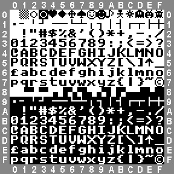
Ve slo�ce _picovga\_exe naleznete podpùrné programy (utility) slou�ící ke konverzi obrázkù a zvukù do interního tvaru pou�itého knihovnou PicoVGA. Soubory se k programu pøidávají ve formì zdrojového kódu, jako pole. Programy jsou pøipraveny ve Visual Studio 2005. Jsou to konzolové programy a tak by nemìla bıt nároèná jejich úprava i pod Linux.
Ve slo�ce _picovga\_exe naleznete soubory s paletami *.act. Soubory pou�ijete ve Photoshopu nebo Gimpu pøi konverzi obrázkù do palet PicoVGA. Nejdùle�itìjší je soubor palet pal332.act. Je vygenerovanı programem pal332.exe (ve slo�ce pal332) a definuje základní 8-bitové barvy PicoVGA. Ve slo�ce pal332 naleznete té� soubor pal332.csv, kterı obsahuje podrobné informace o barvách - poøadové èíslo barvy, RGB hodnotu barvy a hodnoty jednotlivıch slo�ek. Soubor mù�ete zobrazit v Excelu nebo Open Office, ale také jakımkoliv textovım editorem. Mù�e bıt u�iteènı napø. v pøípadì, kdy� si ve Photoshopu pøeètete RGB HEX hodnotu barvy a chcete vìdìt, indexu které barvy to odpovídá v PicoVGA. V tom pøípadì HEX kód vyhledáte v souboru (funkcí Najít) a na zaèátku øádku si pøeètete pøíslušnı kód barvy.
Pøi importu obrázku do barev PicoVGA zkonvertujete obrázek do indexovıch barev, jako palety zvolíte "Custom" (vlastní palety) a ze souborù palet naètete pøíslušnou paletu. V nìkterıch pøípadech (fotografie) mù�e bıt u�iteèné zapnout volbu ditheringu (obvykle metoda Diffusion s 75%), jindy je lepší bez ditheringu.
Ulo�enı obrázek importujete do PicoVGA programem RaspPicoImg (ve slo�ce _picovga\_exe\img). Obrázek ukládejte v�dy do souboru formátu Windows BMP, vypnutá komprese a zapnuté obrácené poøadí linek. V pøípadì 8-bitové grafiky pou�ijte k importu soubor palet pal332.act a obrázek ulo�te jako 8-bitovı paletovı soubor BMP. Pøi exportu do 4-bitové grafiky pou�ijte 4-bitové palety, obvykle pal4_PC.act (palety CGA) nebo pal4_ZX.act (palety ZX Spectrum) a obrázek ulo�te jako 4-bitovı paletovı obrázek. Pøi exportu do 2-bitové grafiky pou�ijte nìkterou ze 2-bitovıch palet palcga*.act (palety CGA v módu 1 a� 6). Obrázek BMP nepodporuje 2-bitovı formát, ale mù�ete ho ulo�it jako 4-bitovı, program RaspPicoImg rozpozná z palet �e se jedná o 2-bitovı obrázek a provede pøíslušnou konverzi. Pøi exportu do 1-bitové grafiky (mono) pou�ijte soubor palet pal1.act a obrázek ulo�te jako 1-bitovı paletovı soubor.
Pøi konverzi obrázku do RLE komprimovaného formátu pou�ijte program RaspPcoRle ve slo�ce _picovga\_exe\rle. Vstupem programu je obrázek BMP zkonvertovanı do 8-bitovıch palet PicoVGA (soubor palet pal332.act), ulo�enı bez komprese, se zapnutım obrácenım poøadím linek. Ètvrtı parametrem programu je èíslo barvy, která se pou�ije jako prùhlednost. Èíslo barvy najdete z HEX kódu (zjištìnı ve Photoshopu kapátkem) v souboru pal332.act. Nemá-li obrázek mít prùhlednost, zadejte namísto barvy prùhlednosti -1.
Program RaspPicoRle je silnì závislı na PIO programu RLE. Do kódu ukládá instrukce s offsety potøebnımi k funkci programu. Musíte proto pou�ít v�dy program ze stejné verze, jako je PicoVGA knihovna, proto�e nìkdy v budoucnu mù�e dojít ke zmìnì formátu pou�itého RLE kódu.
Ve slo�ce snd naleznete program RaspPicoSnd, kterım lze importovat zvuky do PicoVGA. Importovanı zvuk musí bıt ve formátu WAV, bez komprese (komprese PCM), 8 bitù, mono, rate 22050 Hz. K úpravám zvuku mù�ete pou�ít editor Cool Edit, nebo free program Audacity. Audacity disponuje mnoha zvukovımi efekty, umo�òuje dobrou manipulaci se zvukovımi stopami a byl jím i pøipraven zvuk pro video s ukázkami programù knihovny PicoVGA.
Programy jsou pøipraveny pro ovládání klávesnicí pøes konzoli v PC (doporuèeno begPutty) a virtuální sériovı USB port. Podrobnìjší návod k pøipojení konzole naleznete v èlánku o RaspPicoSDK. Nìkteré hry pou�ívají zvuk - generování PWM zvuku pøes pin GP19. Hry s PWM zvukem jsou oznaèeny poznámkou "(zvuk)".
| 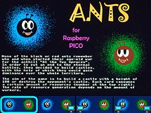 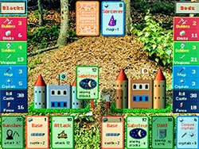 | Ants - karetní hra (zvuk). Dvì mraveništì spolu soupeøí o nadvládu. Cílem je postavit vyšší hrad. Ovládání: J vlevo, L vpravo, mezerník vybrat kartu, D odlo�it, H pomoc, Q konec. Lze hrát proti jinému hráèi i proti poèítaèi. |
| Balloons - demonstrace pou�ití sprajtù, poletující balonky (celkem 43 sprajtù). | |
| 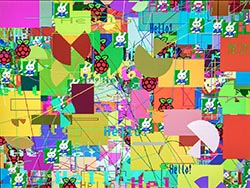 | Draw - demonstrace kreslení grafickıch prvkù. Pro ukázku se støídá pomalé vykreslování a kreslení maximální rychlostí. |
| Earth - rotující zemìkoule. Softwarová sférická transformace obrázku. | |
| 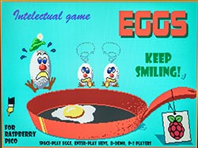 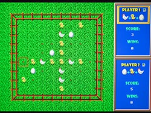 | Eggs - logická hra (zvuk). Vychází ze hry Reversi. Cílem je získat co nejvíce vlastních kamenù. Jeden hráè mìní kameny ve smìru slepice-kuøe-vejce, druhı hráè opaènım smìrem. Ovládání: L vpravo, I nahoru, J vlevo, K dolù, H pomoc, Q konec, P 2 hráèi, D demo, mezerník polo�ení kamene, Enter ok. Lze hrát proti jinému hráèi i proti poèítaèi. |
| 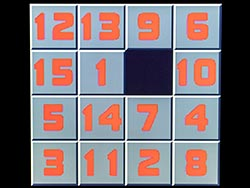 | Fifteen - logická hra (zvuk). Cílem je seøadit kameny v poøadí 1 a� 15. Ovládání: L vpravo, I nahoru, J vlevo, K dolù, Q nová hra. |
| 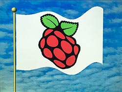 | Flag - vlající vlajka. |
| 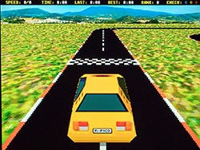 | Ghost Racing - závody aut (zvuk). Po projetí prvního kola (je nutnı prùjezd checkpointy) se objeví soupeø - "duch", kterı kopíruje vaši pøedchozí cestu. Soupeøíte tak sami se sebou. Ve høe jsou celkem 2 soupeøi duchové (druhı se má objevit po projetí druhého kola). Hra je nedodìlaná - nepodaøilo se mi vypoèítat správnou transformaci obrazu soupeøù do kamery a je teï jen velmi pøibli�ná. Je to spíš jen polotovar pro inspiraci a demonstraci 3D projekce terénu (plochy z dla�dic). Ovládání: I pøeøadit nahoru, K pøeøadit dolù, J doleva, L doprava. Lze zaøadit 5 rychlostních stupòù. Pùvodnì byla mo�ná i zpáteèka, ale ta spíš pøeká�ela. |
| 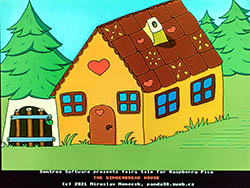 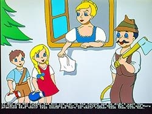 | Gingerbread House - pohádková kní�ka o perníkové chaloupce. Program slou�í jako ukázka práce s obrázky s RLE kompresí. Ovládání: J pøedchozí stránka, L další stránka. |
| 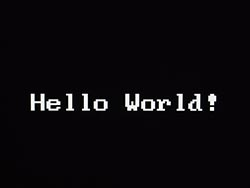 | Hello World - nejjednodušší ukázkovı pøíklad pou�ití knihovny PicoVGA. |
| 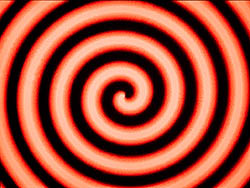 | Hypno - hypnotizující rotující obrazec. Ukázka maticové transformace obrázku. |
| 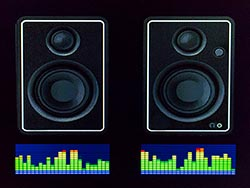 | Level Meter - simulace indikátoru spektra hudby (zvuk). Program pou�ívá mód zobrazení úrovní grafu s gradientem. Vstupem pro displej je pole hodnot. Není potøeba obraz indikátorù generovat programovì a tak lze dosáhnout velmi rychlé odezvy na zmìnu. V demo ukázce se pou�ívají náhodné vzorky. |
| 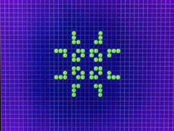 | Life - simulátor �ivota bunìk (celulární automat). Buòky se v ka�dém kroku mìní podle poètu sousedních bunìk: pro 1 a ménì buòka zaniká na osamocení, pro 4 a více buòka zaniká na pøemno�ení, pro 3 vznikne nová buòka, pro 2 není zmìna. Ve høe se lze pøepínat mezi 10 obrazovkami (sloty) a pøenášet obraz mezi nimi pomocí schránky. V ka�dém slotu je pøedpøipravena definice populárních kombinací. Ovládání: L vpravo, I nahoru, J vlevo, K dolù, C kopie do chránky, V vlo�ení ze schránky, D vymazání plochy, mezerník zmìna buòky, Enter start/stop automatu, 0-9 vıbìr slotu. |
| 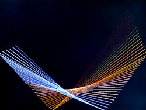 | Lines - generátor èárovıch relaxaèních obrazcù. |
| 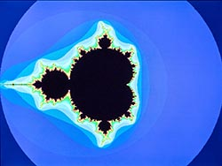 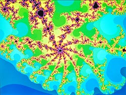 | Mandelbrot - generátor fraktálovıch obrazcù Mandelbrotovy mno�iny. Ke generování je pou�ita integer matematika a díky tomu je pøekreslení obrazce rychlé. Je však nutno poèítat s tím, �e pøi zvìtšování mìøítka zobrazení je potøebná rostoucí pøesnost poètu èíslic. Pou�itá integer a float matematika vystaèí do mìøítka zvìtšení 10^5, double matematika do mìøítka 10^10. Pøi dalším zvìtšování se namísto obrazce zobrazí u� jen barevné èáry. Ovládání: E nahoru, S vlevo, D vpravo, X dolù, Q zvìtšení mìøítka, A zmenšení mìøítka, L volba nízkého rozlišení 132x100, M volba støedního rozlišení 264x200, H volba vysokého rozlišení 528x400, I pøepnutí na celoèíselnou matematiku (nejrychlejší, dosah do 10^-5), F pøepnutí na float matematiku (pomalejší, dosah do 10^-5), B pøepnutí na double matematiku (pomalá, dosah do 10^-10), O sní�ení poètu krokù iterací, P zvıšení poètu krokù iterací, U zvıšení systémovıch hodin, T sní�ení systémovıch hodin, mezera pøekreslení obrazovky. |
| 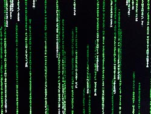 | Matrix Rain - simulace "matrixového kódového deštì". Pou�ívá textovı videomód. |
| 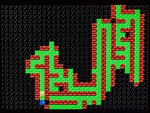 | Maze - cílem je najít cestu z bludištì. Bludištì jsou generována náhodnì programovì. Ovládání: J vlevo, I nahoru, L vpravo, K dolù, H pomoc (ukázání dveøí). |
| 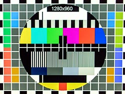 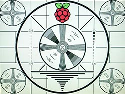 | Monoscope - test videomódù. Klávesami 0 a� 9 a A a� U lze pøepínat rozlišení displeje, od 256x192 po 1280x960, pro VGA monitor i PAL/NTSC televizor. Pro televizor se pro vyšší rozlišení pou�ívá prokládanı obraz (jako je TV vysílání), pro ni�ší rozlišení se pou�ije neprokládanı mód (jako jsou vıstupy z 8-bitovıch poèítaèù). Lze vyu�ít k testování zobrazení na rùzná zaøízení. Jednotlivé testovací obrazce jsou v programu uchovány jako pøipravené obrázky s RLE kompresí. Bylo by mo�né program upravit tak, aby pou�íval jen 1 obrázek, kterı se bude pøepoèítávat podle potøeby, ale musel by se pøi generování komprimovat do RAM s RLE kompresí, proto�e v plné velikosti by se do RAM nevešel. |
| 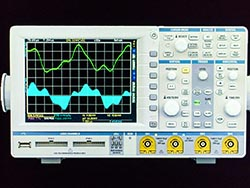 | Oscilloscope - demonstrace zobrazení signálù osciloskopu. Program pou�ívá mód zobrazení grafù a køivek. Obraz prùbìhu signálu není nutné generovat softwarovì, displeji se pøedá pouze pole hodnot, a to umo�òuje velmi rychlou odezvu na zmìnu hodnot. V demo ukázce jsou vzorky generované programovì. Slou�í i jako ukázka skládání segmentù obrazu v rùzném módu. Základní obrázek osciloskopu je 8-bitová bitmapa (s ditheringem), skládající se ze 4 pruhù. V místì obrazovky jsou pou�ity 2 prvky pro zobrazení grafù. Obrazovku pøekrıvá pøekryvná prùhledná vrstva s møí�kou. |
| 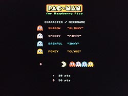 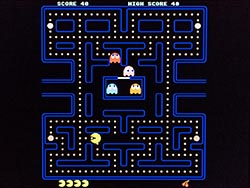 | Pac-Man - populární akèní hra (zvuk). Hra se sna�í napodobit pùvodní verzi hry z roku 1980, od spoleènosti Namco. Je dodr�ena logika chování duchù, poèítání skore a levelù. Upozoròuji, �e zvuky a vzhled jsou pøevzaty z pùvodní hry, vztahuje se na nì copyright spoleènosti Namco a proto hra slou�í jen jako inspiraèní ukázka. Ovládání: J vlevo, I nahoru, L vpravo, K dolù, A pauza. |
| 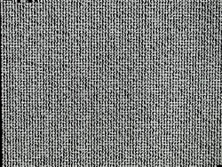 | Pi - vıpoèet èísla Pi na 4833 èíslic. Po vıpoètu je vısledek zkontrolován s oèekávanım vzorkem. |
| 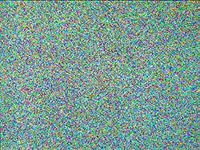 | Pixels - náhodné generování barevnıch pixelù. |
| 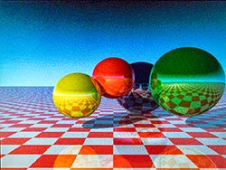 | Raytracing - generování 3D obrazce metodou ray tracing. Vzhledem k omezené barevné hloubce PicoVGA je pøi zobrazení pou�it rastrovı dithering ("zrnitost" obrázku). |
| 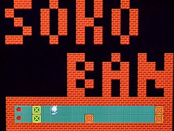 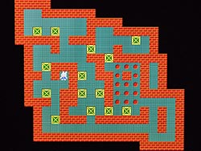 | Sokoban - logická hra (zvuk). Cílem je pøesunout bedny na oznaèená políèka. Hra obsahuje 3000 scén od rùznıch autorù, spolu s jejich øešením. Ovládání: L vpravo, I nahoru, J vlevo, K dolù, H pomoc (ukázka øešení scény), R restart scény, Q pøedchozí scéna, W další scéna, P vıpis info. |
| 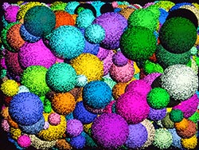 | Spheres - náhodné generování koulí. |
| 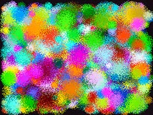 | Spots - náhodné generování skvrn. |
| 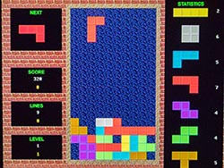 | Tetris - populární hra, skládání kostek (zvuk). Ovládání: L vpravo, I otoèení, J vlevo, K polo�ení, A pauza. |
| 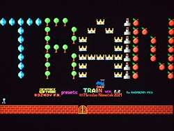 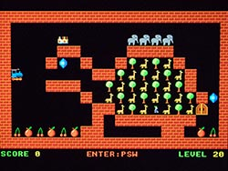 | Train - logická hra na principu Hada (zvuk). Cílem je posbírat všechny pøedmìty a projet branou. Hra má 50 scén, spolu s jejich øešením. Ovládání: L vpravo, I nahoru, J vlevo, K dolù, H pomoc (ukázka øešení scény), Enter zadání hesla, Esc zpìt, BS smazání znaku. |
| 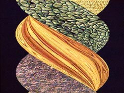 | Twister - zkroucení texturovaného kvádru. Slou�í jako ukázka programové deformace obrázku, s vyu�itím hardwarového interpolátoru. |
| Water Surface - simulace vlnící se vodní hladiny (zvuk). |
Autor: Miroslav Nìmeèek, http://panda38.sweb.cz
{kind=link}
{kind=link}
{kind=link}
{kind=link}
{kind=link}
{kind=link}
{kind=link}
{kind=link}
{kind=link}
{kind=link}
{kind=link}
{kind=link}
{kind=link}
{kind=link}
{kind=link}
{kind=link}
{kind=link}
{kind=link}
{kind=link}
{kind=link}
{kind=link}
{kind=link}
{kind=link}
{kind=link}
{kind=link}
{kind=link}
{kind=link}
{kind=link}
{kind=link}
{kind=link}
{kind=link}
{kind=link}
{kind=link}
{kind=link}
{kind=link}
{kind=link}
{kind=link}
{kind=link}
{kind=link}